► BB TAPEDECK v1.0
Reel-to-reel recorder with variable speed, punch-in, and WAV export
► BB SAMPLER v1.0
Chromatic sampler with bit crush, sample rate reduction, and trim controls
► BB EDIT v1.0
Stereo audio editor with waveform display, selection, fades, and normalize